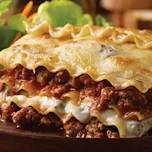

Lasagna

Description
This delicious hearty lasagna can be made in a pinch in case of a last minute dinner plan or even spruced up for a nice relaxing candlelit dinner!
Ingredients
- 1 (26 ounce) jar Prego® Traditional Italian Sauce
- 6 each uncooked lasagna noodles
- 1 (15 ounce) container ricotta cheese
- 2 cups shredded mozzarella cheese
- ¼ cup grated Parmesan cheese
Steps
- Spread about 1 cup pasta sauce in 2-quart shallow baking dish (11x7-inch). Top with 3 uncooked noodles, ricotta cheese, 1 cup mozzarella cheese, Parmesan cheese and 1 cup pasta sauce. Top with remaining 3 uncooked noodles and remaining pasta sauce. Cover.
- Bake at 375 degrees F for 1 hour Uncover and top with remaining mozzarella cheese. Let stand 5 minutes.